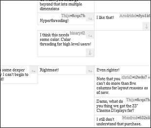

Twisted, Piping Forum, Goes by the Name of Fugi #
You can say you invented tumblelogging way back in the paleolithic era all you want, Chris Neukirchen still brought Anarchaia to realization in such a vivid way, both by clever design and by actually posting fantastic stuff all the time. He’s constantly turning that crank.

The kid’s got a new project for flowing conversations called Fugi (pictured at right.) It’s a forum which lays out threads like they’re pipes. The mind reels. You watch the conversation fork and you can wedge yourself between posts, you can play it lowkey and “sage” the post (like marking it as a minor edit on a wiki.)
The encouragement of anonymity is interesting:
Fugi encourages private posting. This ensures that the quality of your post will be defined by the quality of the content only, and not by the author and sheit’s reputation.
I wonder, though. The restricted space prevents length, I wonder how much quality you can get out of a paragraph or two? Then again, if the fugilists are highly cooperative, it’s the whole tapestry that’s got gravity. (And, yes, there is source.)
<|:{
Ur, ummm… am I the only one who doesn’t get this?
not a dino
This is just usual threaded comments with a new face! I was expecting something more revolutionary.
Pan
It’s interesting, but then again, it’s basically a new way to present the age-old threaded forums. This reminds me of infinite canvas .
Danno
It’s kinda broken.
You have to post to the right on the first comment.
If you could post below on the first post, the natural flow would be direct conversations go down, tangents sprout out to the right.
Of course that wouldn’t work since direct replies to tangents would start colliding with each other.
why
The only reason you guys don’t like it is because you’re not fugilists.
Danno
I actually like it a lot.
I just think the backwards-r conversation appearance is a little more confusing than it needs to be.
I was gonna bookmark it at del.icio.us, but I figure it’s going to get on a regular port soon and then I’ll be confused and stuff.
PJ
It took me a minute to get it, but I kinda like it.
pugilist
if pugilists fight with their fists what do fugilists fight with?
fugilist
We fight with our pistes.
It gets rather cold.
netghost
I like the way it looks, but beyond that, it’s kinda silly. Fun though :)
MenTaLguY
Hmm. It needs… I don’t know. It needs something. Being able to post down-not-just-right from the root post is the tip of the iceburg. Clever though.
MenTaLguY
Well, I don’t know. Maybe right-posting is the right thing for this format.
Danno
Yeah, I was thinking the exact same thing earlier MenTaL, then I got it all of a sudden.
MenTaLguY
Hmm, I think I know what it is. There’s a lack of visual cues here—it needs to make it clearer what’s attached to whom.
Two main things:
MenTaLguY
Also what I think would be awesome (if pointless) would be a version of this where you could post off an arbitrary side of any other post. Like dominoes.
Then you could have like a battle and outflank other people’s threads.
Daniel Schierbeck
This is a very cool idea, though practically limited. Using SVG would beef this up a lot! That would allow for more than just down/rigth replies.
Mark
MenTaLguY: Or, you could play Go with the comments.
Comments are closed for this entry.